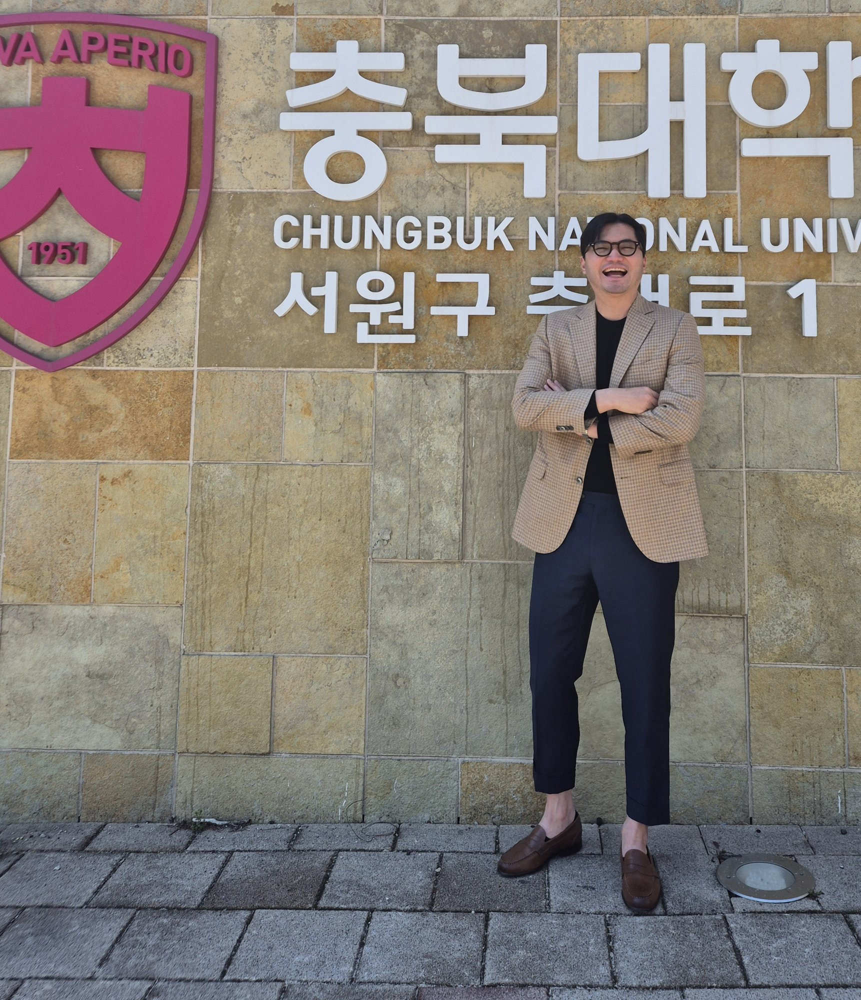
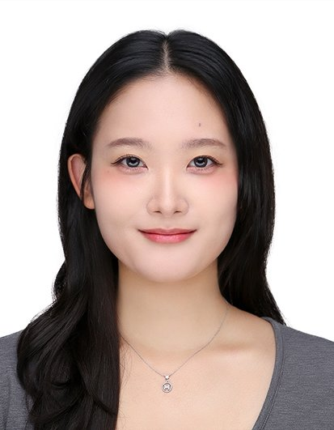
정화영 연구원석사과정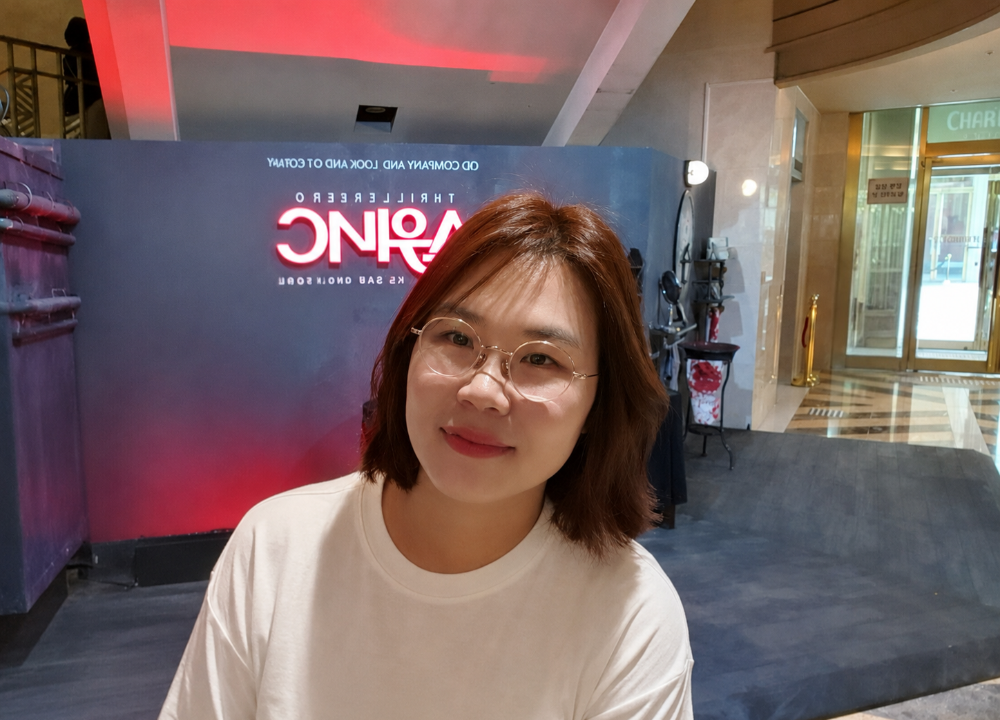
조현진 연구원석사과정More photos are organized in the Gallery section ↓
A visual record of the journey — from graduate training to postdoctoral fellowship to leading the AIR Lab. People and memories that shaped who I am as a researcher and mentor.
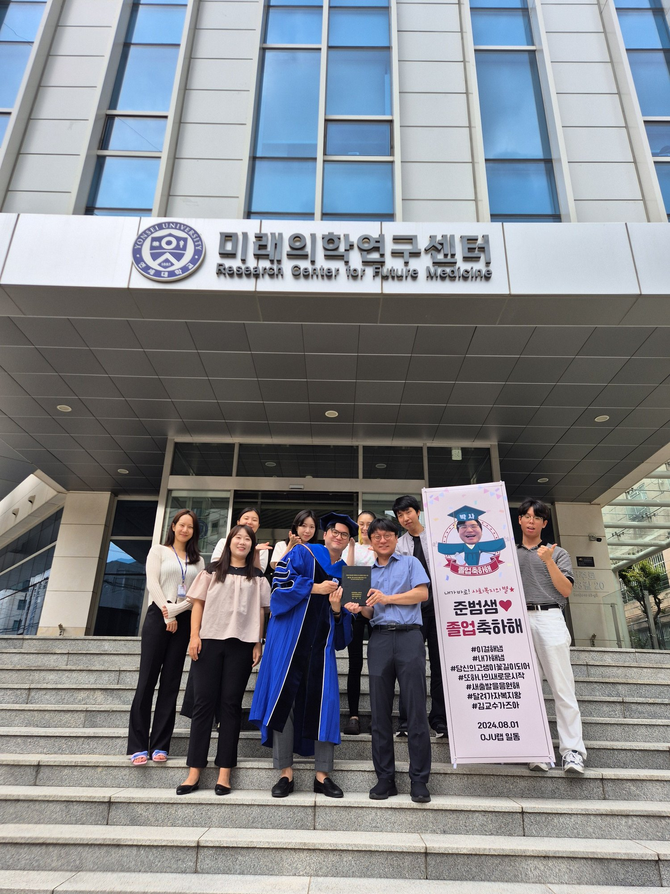
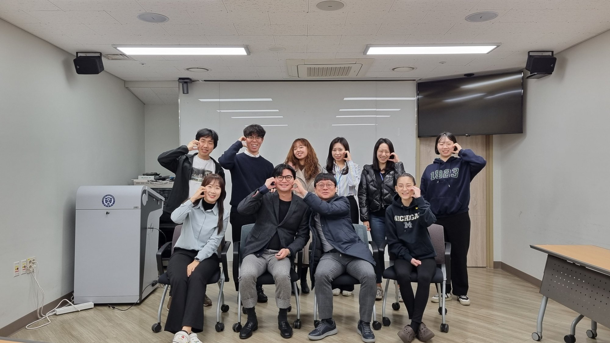
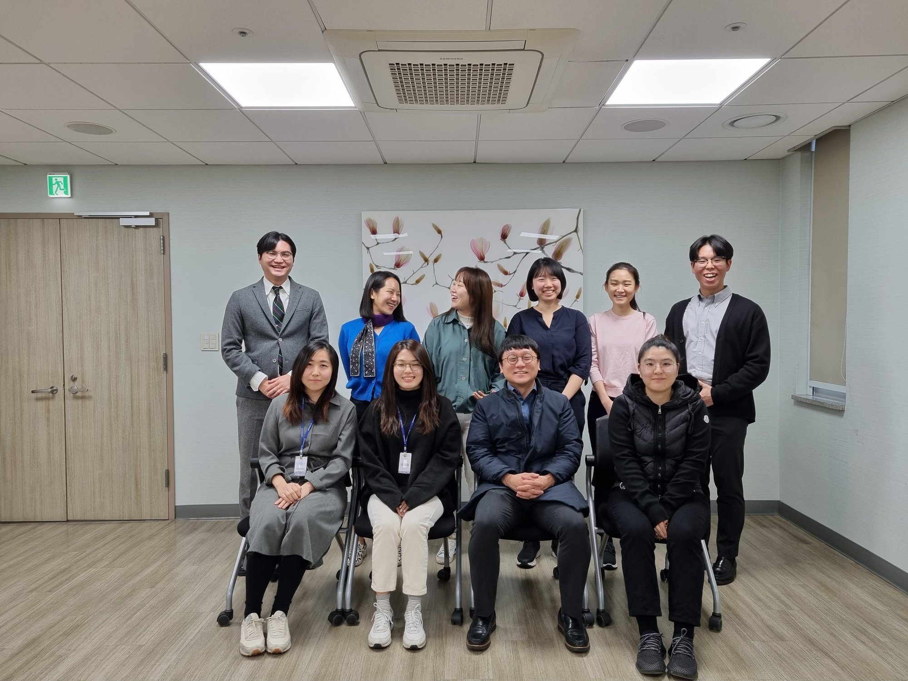
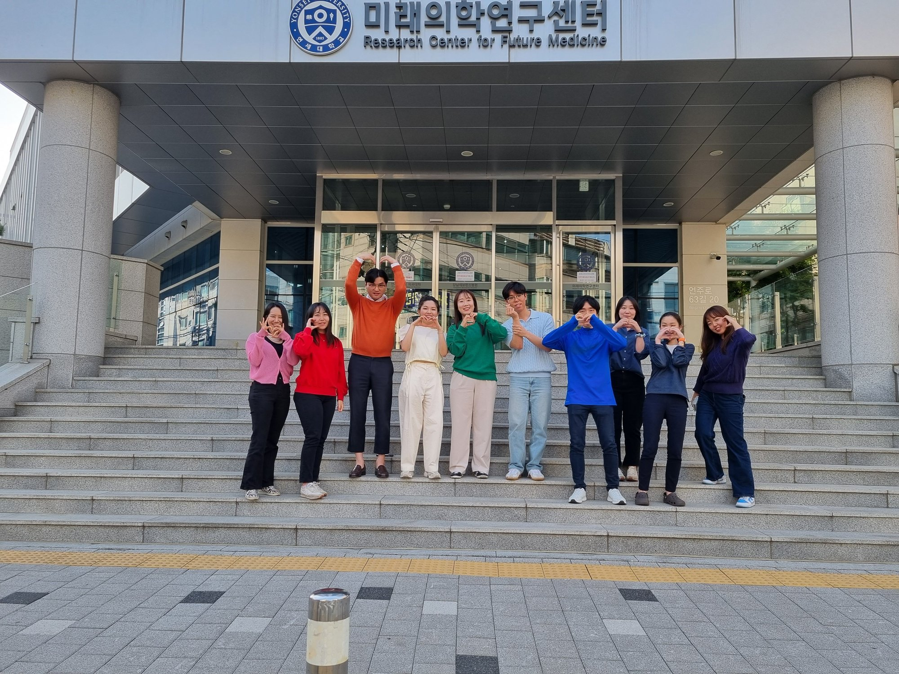
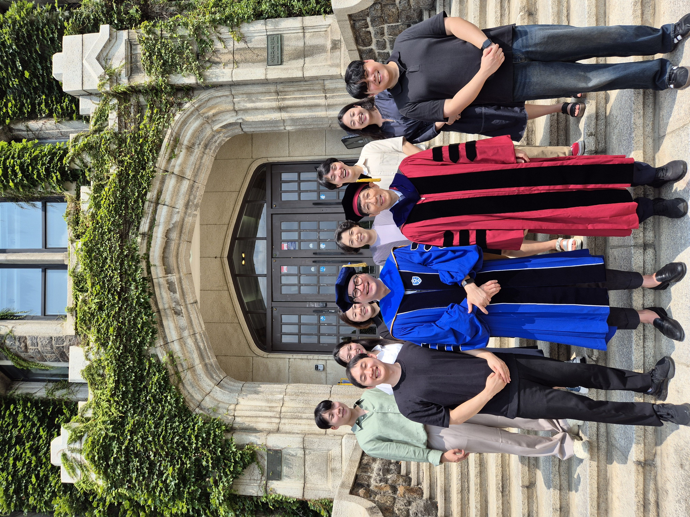
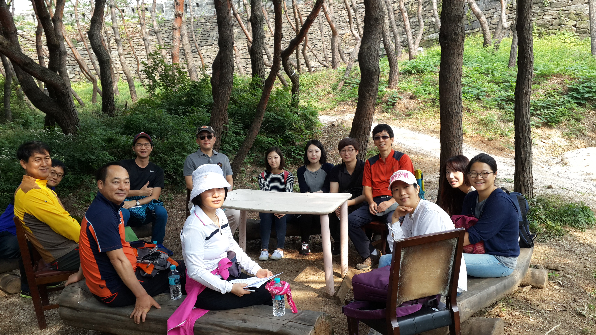
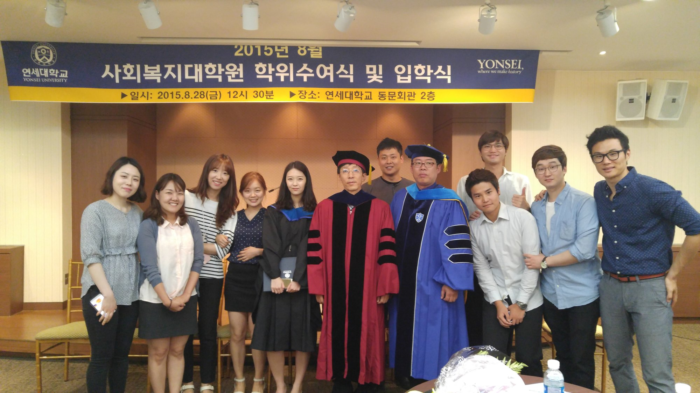
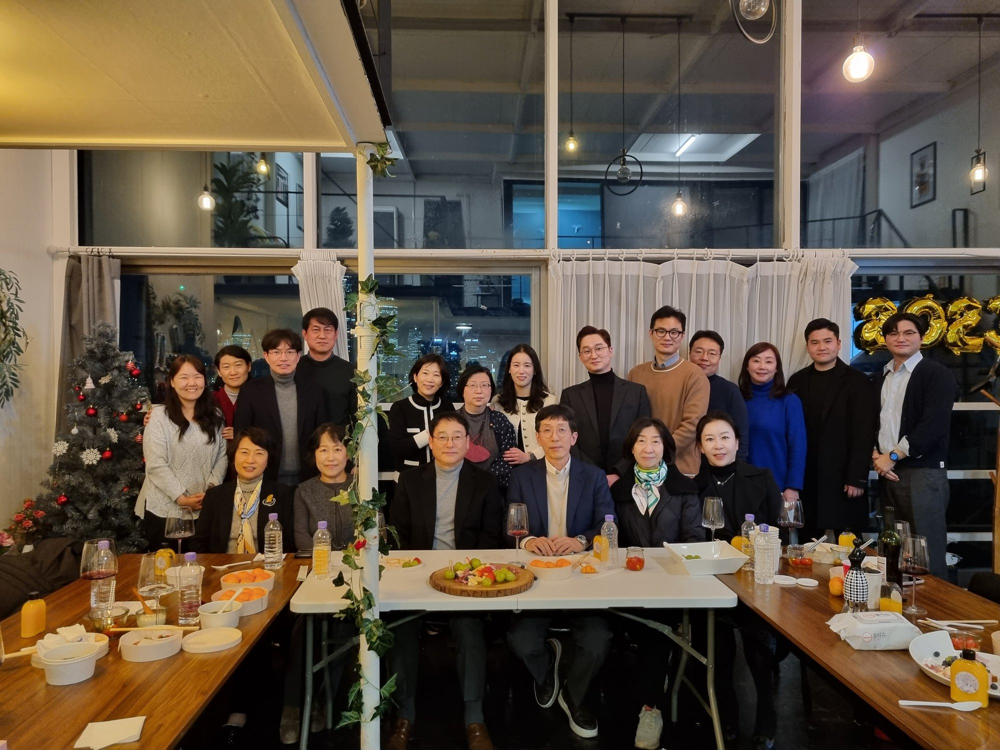
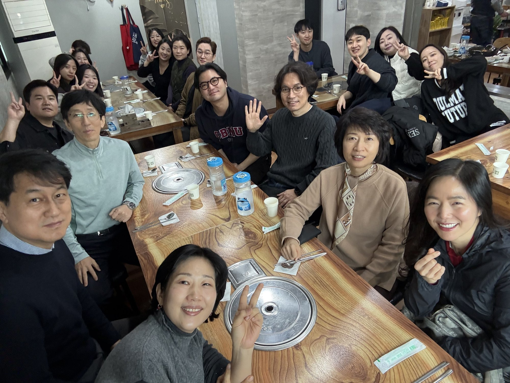